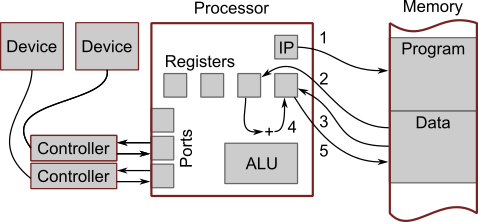
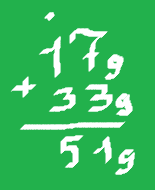

Технические основы программирования
Технические основы программирования
Технические основы программирования
В данном разделе рассматриваются вопросы, которые необходимо решить перед началом программирования. К ним относятся: устройство вычислительных машин, способы представления данных, языки программирования.
Описывается общая схема и принцип работы некоего вычислительного устройства, которое способно выполнять функции персонального компьютера (ПК), смартфона или другого подобного устройства.
Данное устройство выполняет операции с числами. Операции с другими типами данных (текст, изображение, звук) могут быть реализованы через операции с числами и в данном документе они не рассматриваются. Числа рассматриваются как некие значения, представление чисел не рассматривается.

Processor — комплексное устройство, выполняющее операции с числами:
+, -, *, / и некоторые другие);>, <, == и некоторые другие);IP — instruction pointer, указатель инструкций. Указывает на инструкцию, которая будет выполнена после текущей инструкции. После отправки инструкции на выполнение IP автоматически переключается на следующую инструкцию. Возможно программное изменение указателя.
Registers — регистры, ячейки памяти внутри процессора. В регистры помещаются значения, с которыми в данные момент выполняются операции. Операции с числами могут быть выполнены только в регистрах.
ALU — arithmetic logic unit, арифметико-логическое устройство. Ответственно за выполнение арифметических и логических операций (см. выше).
Port — канал взаимодействия с внешними устройствами. Запись в порт это отправление числа внешнему устройству, чтение из порта получение числа с внешнего устройства.
Controller — средство взаимодействия с конкретным устройством. Его можно рассматривать как специфический компьютер. Различные типы устройств требуют свои типы контроллеров (контроллер мыши, контроллер клавиатуры и т.п.).
Контроллер преобразует сигналы из порта в определенное поведение внешнего устройства. Например: отправка последовательности чисел к контроллеру монитора вызывает изменение изображения на экране.
Так же контроллер преобразует воздействие на внешнее устройство в получение процессором чисел из порта. Например: при нажатии клавиши на клавиатуре или движении мыши процессор считывает из соответствующего порта последовательность чисел.
Device — внешние устройства например, мышь, клавиатура, монитор. Жесткий диск, даже если находится внутри корпуса компьютера, с точки зрения данной архитектуры является внешним устройством.
1 — Процессор считывает инструкцию по адресу, который находится в IP. IP автоматически переключается на следующую инструкцию.
2 — Процессор считывает число из памяти в регистр. Предположим, что инструкция предписывает процессору считать из некой ячейки памяти число 2 и поместить его в некий регистр.
3 — Согласно следующей инструкции процессор считывает из памяти другое число, например 3.
4 — Следующая инструкция прибавляет к числу в одном регистре число из другого регистра.
5 — Следующая инструкция записывает в память по некоему адресу число из некоего регистра.
Инструкции выполняются в том порядке, в котором они расположены в памяти. Такой порядок называется последовательным. Это происходит потому что IP каждый раз переключается на следующую инструкцию. Существуют инструкции, которые явно записывают адрес следующей команды в IP, они называются инструкциями перехода и могут быть инструкциями:
Таким образом происходит ветвление программы.
Если в IP записывается адрес предыдущей инструкции, то таким образом можно получить циклическое выполнение.
Современные вычислительные устройства изготавливаются на основе полупроводниковых компонентов. Первые электрические вычислительные машины строились на основе реле, а позже на основе электронных ламп. Самые первые счетные машины имели механический принцип действия.
Рассмотренное в данном документе вычислительное устройство работает только с числами, поэтому чтобы обрабатывать другие типы данных, их необходимо представить в виде чисел.
Используемые нами арабские десятичные числа описываются позиционной системой счисления с основанием 10. Существуют другие системы счисления (например римская), которую мы не будем рассматривать в данном разделе.
В позиционной системе счисления с основанием N разряды начиная с младшего имеют следующий вес:
| Разряд | N-ичная СЧ | Десятичная СЧ | Пятеричная СЧ | Троичная СЧ | Двоичная СЧ |
|---|---|---|---|---|---|
| 1 | N0 | единицы | единицы | единицы | единицы |
| 2 | N1 | десятки | пятерки | тройки | двойки |
| 3 | N2 | сотни | двадцатьпятки | девятки | четверки |
| ... | и т.д. |
Покажем некоторые примеры чисел в различных системах счисления:
| Система счисления | 0 | 1 | 2 | 3 | 4 | 5 | 6 | 7 | 8 | 9 | 10 | 11 | 12 | 13 | 14 |
|---|---|---|---|---|---|---|---|---|---|---|---|---|---|---|---|
| Десятичная | 0 | 1 | 2 | 3 | 4 | 5 | 6 | 7 | 8 | 9 | 10 | 11 | 12 | 13 | 14 |
| Пятеричная | 0 | 1 | 2 | 3 | 4 | 10 | 11 | 12 | 13 | 14 | 20 | 21 | 22 | 23 | 24 |
| Троичная | 0 | 1 | 2 | 10 | 11 | 12 | 20 | 21 | 22 | 100 | 101 | 102 | 110 | 111 | 112 |
| Двоичная | 0 | 1 | 10 | 11 | 100 | 101 | 110 | 111 | 1000 | 1001 | 1010 | 1011 | 1100 | 1101 | 1110 |
| Шестнадцатеричная | 0 | 1 | 2 | 3 | 4 | 5 | 6 | 7 | 8 | 9 | A | B | C | D | E |
В шестнадцатеричной системе счисления каждый разряд выражает значение от 0 до 1510 поскольку имеются символы (цифры) от 0 до 9, то договорились для оставшихся значений использовать латинские буквы от A до F. Рассмотрим типичные шестнадцатеричные числа:
| 10 | 11 | 12 | 13 | 14 | 15 | 16 | 17 | 18 | ... | 31 | 32 | ... | 64 | ... | 128 | ... | 160 |
|---|---|---|---|---|---|---|---|---|---|---|---|---|---|---|---|---|---|
| A | B | C | D | E | F | 10 | 11 | 12 | ... | 1F | 20 | ... | 40 | ... | 80 | ... | A0 |
Система счисления обозначается нижним индексом, например:
1110 = 215 = 1023 = 10112
Обычно числа в СЧ отличной от 10-ной читаются поразрядно, например: 125 читается как "один два", а не "двенадцать".
Для перевода в десятичную систему счисления используют степени основания системы счисления:
1023 = 1 * 9 + 0 * 3 + 2 * 1 = 1110
11012 = 1 * 8 + 1 * 4 + 0 * 2 + 1 * 1 = 1310
Для перевода из десятичной системы счисления используют последовательное деление с остатком:
10 / 2 = 5, ост. 0
5 / 2 = 2, ост. 1
2 / 2 = 1, ост. 0
1 / 2 = 0, ост. 1
Остатки записываются в обратном порядке: 1010 = 10102.

Числа в других системах счисления можно складывать в столбик так же как и десятичные числа. В нашем примере, 179 + 339 = 519, при сложении разрядов единиц одна девятка переносится в следующий разряд, следовательно в результат пишется единица, а не ноль, как это было бы в десятичной системе счисления.
Note
Также смотри эту задачу, которая демонстрирует работу с системами счисления.
При кодировании текста всем используемым символам назначается определенное число или код. Таблица соответствия символов и кодов называется кодировкой. За всю историю развития вычислительной техники было разработано большое количество кодировок, среди них можно выделить:
однобайтные, т.е. каждый символ кодируется числом от 0 до 255. Понятно что таким способом нельзя закодировать символы всех существующих алфавитов, поэтому используются так называемые кодовые страницы. Кодовые страницы это кодировка для определенного языка. В каждой кодовой странице коды от 0 до 127 совпадают и содержат английский алфавит, цифры, знаки препинания и общие специальные символы. Вторая часть таблицы, с кодами от 128 до 255 заполнена символами конкретного алфавита/языка. При этом все равно есть проблема с азиатскими языками.
многобайтные, т.е. на кодирование одного символа может выделяться более одного байта. Наиболее
распространенной можно назвать кодировку UTF-8.
В этой кодировке рассмотренные выше символы с кодами
от 0 до 127 кодируются так же одним байтом. Остальные символы могут иметь размер 2, 3, 4 и,
возможно, более байтов.
Рассматриваются общие характеристики различных типов языков программирования.
Синтаксис языка состоит из элементов алфавита данного языка, ключевых слов, пунктуации, а также правил написания корректных программных текстов.
Семантика языка определяет смысл синтаксических конструкций, т.е. набор действий, которые будут выполнены в соответствии с написанной программой.
Разнообразие языков программирования можно посмотреть здесь.
Вычислительное устройство, описанное в главе Архитектура ПК выполняет инструкции находящиеся в памяти и представляющие собой набор чисел. Механизм исполнения инструкции реализован конструктивно, посредством, например: электронных схем, определенным образом соединенных электрических реле, собранных определенным образом механических элементов.
Набор всех возможных инструкций, описание их действий и способов их указания представляет собой язык программирования.
Машинный язык состоит из инструкций, которые выполняются непосредственно процессором, т.е. программа на этом языке загружается в оперативную память (как есть), в IP записывается адрес первой инструкции этой программы и программа начинает выполняться. Машинный язык является языком низкого уровня (ЯНУ).
Преимущество ЯНУ. ЯНУ позволяют писать более эффективные программы поскольку представляет доступ ко всем возможностям процессора.
Недостатки ЯНУ. Писать программы на ЯНУ трудоемко, требует высокой квалификации.
Для упрощения программирования на ЯНУ был создан язык в котором цифровые коды программ представлены буква-сочетаниями похожими на слова естественного языка, в основном английского языка. Этот язык назвали языком ассемблера.
Такая программа не может быть выполнена непосредственно процессором. Перед выполнением она должна быть преобразована в программу на машинном языке. Для этого используется программа, которая часто называется ассемблер.
Язык ассемблера является ЯНУ, потому что его инструкции однозначно переводятся в инструкции машинного языка.
Языки программирования высокого уровня (ЯВУ) были созданы для упрощения и ускорения процесса разработки программ. Синтаксис этих языков включает более понятные человеку категории и действия, например:
Преимущество ЯВУ. Писать программы быстрее, легче.
Недостатки ЯВУ. Как правило нет доступа ко всем возможностям процессора и программы работают медленнее.
Для исполнения программ на ЯВУ, эти программы должны быть переведены (транслированы) в машинные инструкции. Существует два способа это сделать.
Компиляторы переводят всю программу на ЯВУ в программу на машинном языке. Полученная программа может быть исполнена.
Преимущество компиляции. Полученная программа работает быстрее.
Недостатки компиляции. Любое изменение программы требует перекомпиляции.
Каждая инструкция на ЯВУ последовательно переводится в машинные инструкции и тут же исполняется.
Преимущество интерпретации. Измененная программа может быть сразу выполнена.
Недостатки интерпретации. Программа, очевидно, работает медленнее, т.к. каждый раз требуется перевод в машинные инструкции. Некоторые "умные" интерпретаторы могут запоминать транслированные фрагменты программ, что в какой-то степени повышает производительность.
Программы, которые мы обсуждали до сих пор, пишутся под конкретные аппаратные платформы и операционные системы(ОС). Создание версий программы для других платформ и ОС — процесс трудоемкий. Для облегчения этого процесса были созданы языки программирования (ЯП), которые транслируются не в машинный код, а в программу для некоей виртуальной машины (ВМ). Такая программа часто называется байт-кодом. ВМ — это транслятор. Байт-код может выполняться на той платформе, для которой написан соответствующей ВМ. Компилятор компилирует из ЯВУ (Python, Java) в байт-код, и он выполняется на трансляторе(ВМ) переводя в машинный код и выполняется.
Также смотри в Википедии: Java Virtual Machine